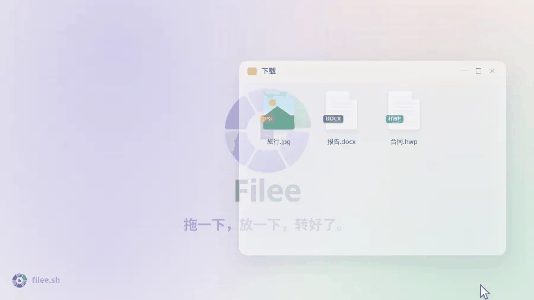
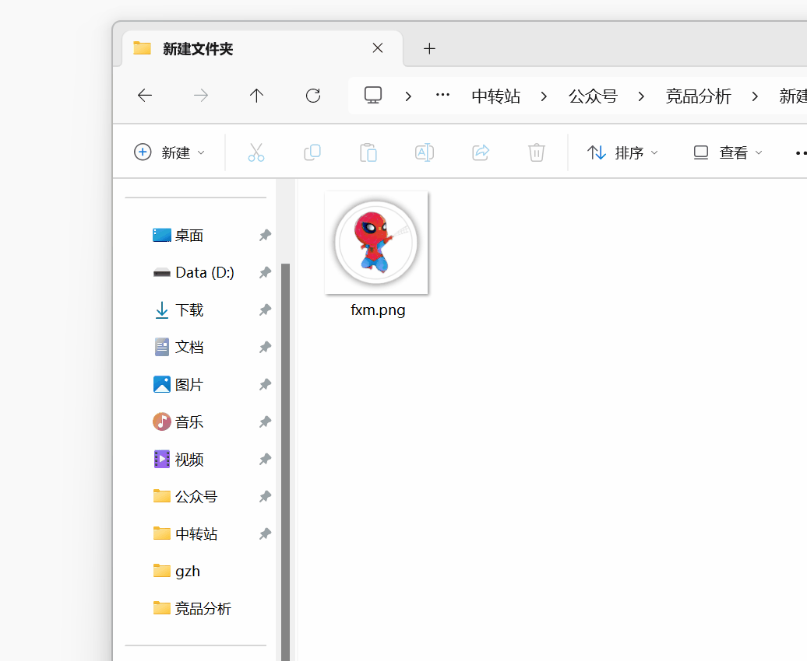
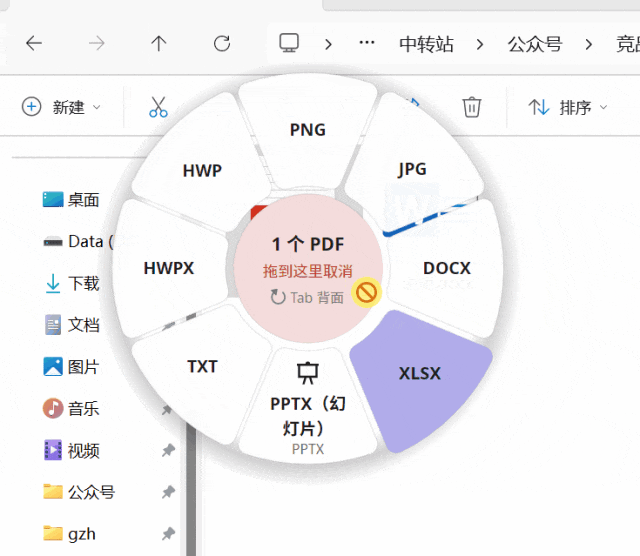
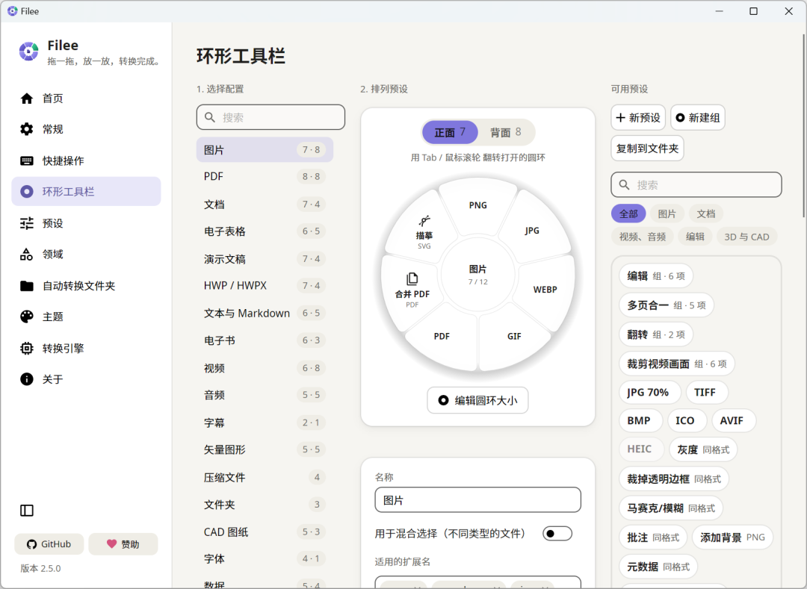
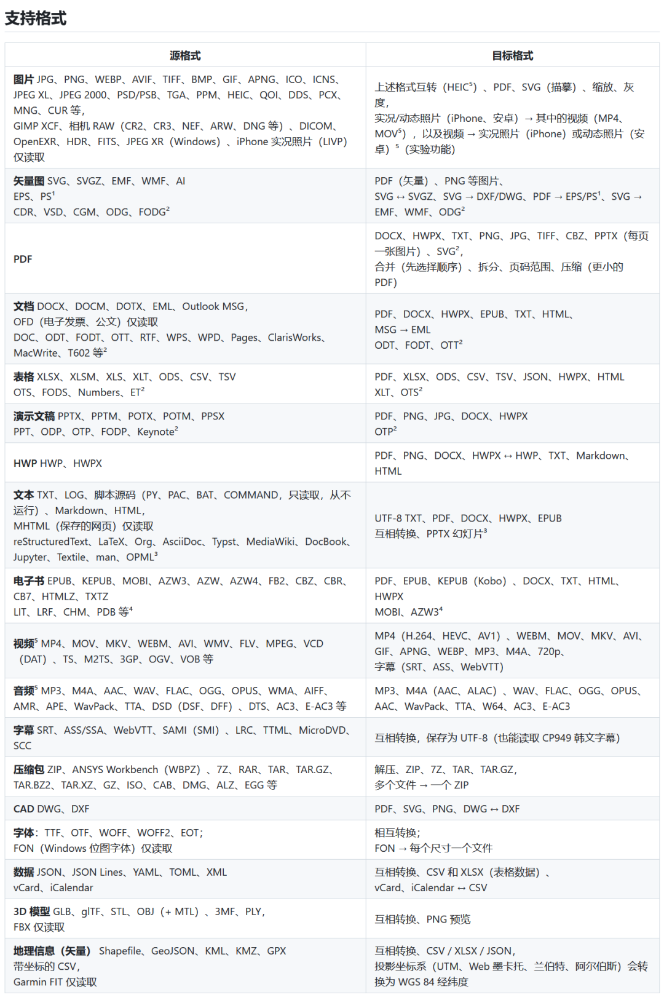
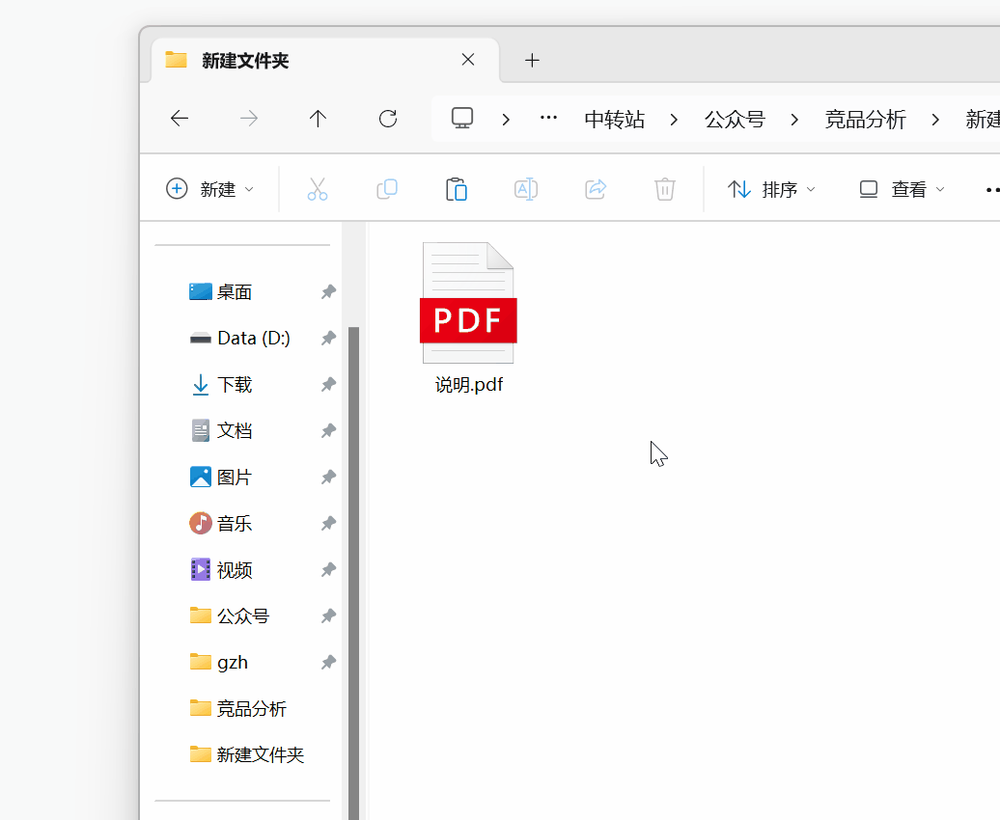
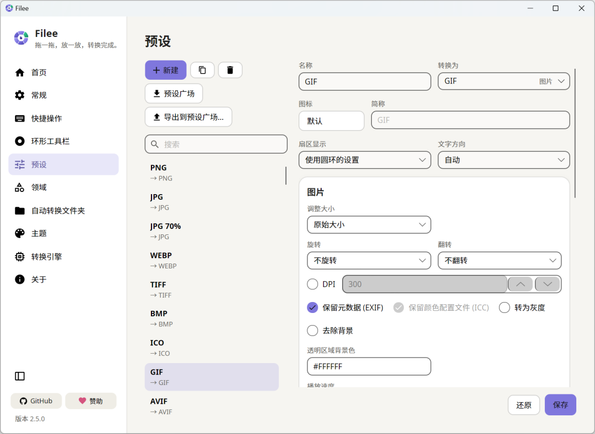
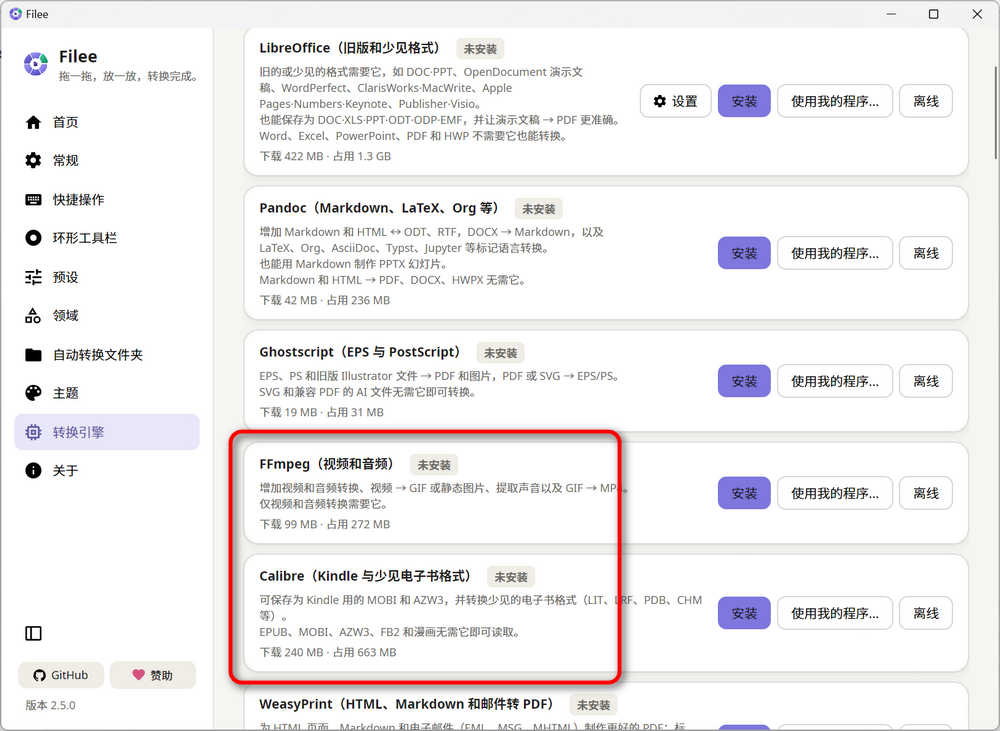

这个最无敌：GitHub 3万 Star，270 种格式，完全免费，还不用联网
查看微信原文 ↗这些年，我们已经见过太多文件格式转换工具，但今天这个这个开源项目，我想说：这可能是文件格式转换工具里无敌般的存在！
它不需要打开转换软件，你只要直接拖动文件，就能在鼠标旁边完成格式转换。支持的格式多达 270 种，从图片、PDF、Office 文档，到视频、音频、电子书，甚至一些冷门格式也能处理。
免费、开源，支持离线处理。截至目前，这个项目在 GitHub 已经收获了 3 万多个 Star，这就是今天要分享的开源项目：Filee。

先来看 Filee 最有意思的设计。
一般的文件转换工具，基本都是这样的流程：打开软件-找到需要转换的文件-选择输出格式-设置参数-点击转换，等待完成。
而Filee 则把这个过程做得非常简单。
它采用了一种类似甜甜圈的圆形菜单设计。
在 Windows 上，按住 Ctrl 键，然后拖动文件，就会在鼠标位置弹出一个圆形菜单。菜单里面会根据当前文件的类型，自动显示可以使用的转换格式。

比如你拖入一张 PNG 图片，它就会显示 PNG、WEBP、PDF 等适用选项。想转成什么格式，直接把文件拖到对应的选项上即可。
整个过程不需要打开一个庞大的软件窗口，也不用在一堆菜单中来回寻找。
而且圆环不止一面，按Tab键或滚动鼠标滚轮，圆环会翻到背面，有更多工具。

当然这个圆形菜单你也可以根据自己的使用习惯和场面去自定义，非常自由和方便。

支持270种格式
如果你觉得它只是一个图片格式转换工具，那就有点小看它了。

根据项目介绍，Filee 支持 270 种文件格式，覆盖了图片、文档、表格、视频、音频、电子书、压缩包等多个领域。
比如PDF转Word这种常见项目。

直接拖进去就能处理。
而且视频和音频这块也没有落下。
支持 MP4、MOV、MKV、WEBM、AVI 等常见视频格式，以及 MP3、WAV、FLAC、AAC、OGG 等音频格式。
例如：视频转换成 MP4。
还有几个实用的细节
支持批量转换
不需要一个文件一个文件地处理，可以一次拖入多个文件，并行转换。
对于需要批量处理图片、视频或者文档的人来说，效率会高不少。
可以直接从浏览器拖动文件
这个设计我觉得挺有意思。
在 Chrome、Edge、Firefox、Safari 等浏览器中，可以直接把图片、文件链接或者下载内容拖到 Filee 里进行处理。
支持自定义转换预设
不同文件类型可以设置自己的转换参数。

比如图片可以设置质量、尺寸、DPI，PDF 可以设置页面范围和压缩参数，视频和音频也有对应的选项。
设置好之后，下次直接使用即可，不用每次重新配置。
免费开源，本地运行
这是我比较推荐 Filee 的一个原因。
Filee 采用本地处理的方式，文件不需要上传到服务器，支持离线使用，没有隐私风险。
项目采用 MIT 开源协议，完全免费。
需要注意的是，并不是所有格式都能在首次安装后直接使用。
部分转换功能需要额外的处理引擎，例如 FFmpeg、LibreOffice、Pandoc、Calibre 等。Filee 会在需要时下载对应引擎，而不是一开始就全部安装。

自己可以根据需要去转换引擎里面安装对应的引擎，这里我建议把FFmpeg和Calibre安装上就基本可以解决绝大部分格式了。
反正出现转不了的，就到这里下载引擎解决。
但作为一个日常文件转换工具，功能已经相当丰富了。如果你经常需要处理各种文件格式，建议收藏一下。
https://github.com/KnifeLemon/Filee